Two-Dimensional ODE Systems
Source:vignettes/two-dimensional-systems.Rmd
two-dimensional-systems.RmdIntroduction
A two-dimensional autonomous ODE system has the form
where the derivatives depend only on the current state , not on time directly. Two-dimensional systems are the natural setting for phase plane analysis: rather than plotting each state variable against time, we plot trajectories directly in the plane and read off qualitative behavior from their geometry.
The key objects in a 2D phase plane analysis are:
- Flow field — arrows at each point showing the direction and (optionally) speed of the vector .
- Nullclines — curves where (x-nullcline) or (y-nullcline). Their intersections are the equilibria.
- Trajectories — solution curves from specified initial conditions.
- Equilibria — points where both and simultaneously, classified by the Jacobian eigenvalues.
This vignette covers:
- Defining 2D ODE systems in
ggphasr - Building a phase portrait layer by layer
- Phase plane analysis of the Lotka–Volterra predator-prey model
- A user-defined SIR epidemic model
- The Van der Pol oscillator and limit cycles
- The two-species competition model and bistability
- Time series plots
1 Defining a 2D ODE in ggphasr
For a 2D system, Convention A requires the state vector
y to have length 2, with y[1] =
and y[2] =
,
and the return value to be a list containing a length-2 derivative
vector:
# Convention A (deSolve-compatible)
my_ode <- function(t, y, parameters) {
x <- y[1]; v <- y[2]
list(c(
f(x, v), # dx/dt
g(x, v) # dy/dt
))
}Convention B for 2D systems takes x and y
as separate arguments and returns a plain numeric vector:
# Convention B (simplified)
my_ode <- function(x, y, parameters = NULL) {
c(f(x, y), g(x, y))
}ggphasr distinguishes the two conventions by checking
whether the first argument is named t (Convention A) or
x (Convention B).
2 The Lotka–Volterra predator-prey model
The Lotka–Volterra equations are the classical model of predator-prey dynamics:
where is prey abundance, is predator abundance, and are rate constants.
Equilibria:
- Trivial: — both species absent (unstable saddle)
- Interior: — coexistence (neutrally stable center)
Nullclines:
- x-nullcline (): or
- y-nullcline (): or
With , , , , the interior equilibrium is at .
2.1 Flow field
lv_params <- c(alpha = 1, beta = 0.5, delta = 0.5, gamma = 1)
gg_flow_field(
ode_lotka_volterra,
xlim = c(0, 5),
ylim = c(0, 5),
parameters = lv_params,
xlab = "Prey x",
ylab = "Predator y",
title = "Lotka-Volterra: flow field"
)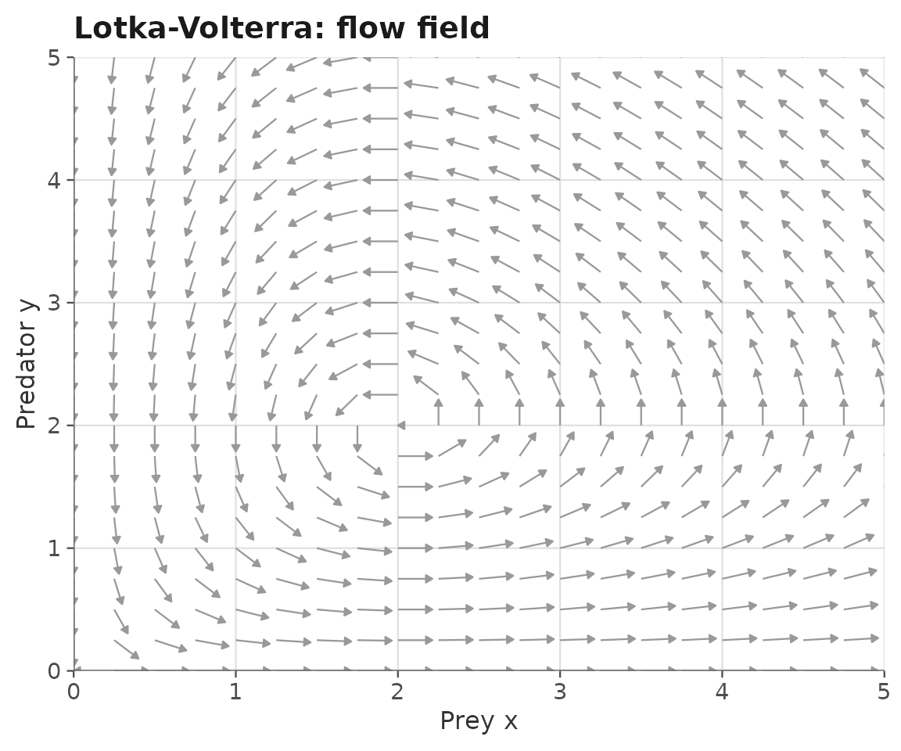
2.2 Adding nullclines
The x-nullcline (red, solid) and y-nullcline (blue, dashed) intersect at the equilibria. Their visual intersection immediately reveals the coexistence point .
gg_flow_field(
ode_lotka_volterra,
xlim = c(0, 5),
ylim = c(0, 5),
parameters = lv_params,
xlab = "Prey x",
ylab = "Predator y",
title = "Lotka-Volterra: flow field + nullclines"
) +
gg_nullclines(
ode_lotka_volterra,
xlim = c(0, 5),
ylim = c(0, 5),
parameters = lv_params,
legend_position = "bottom"
)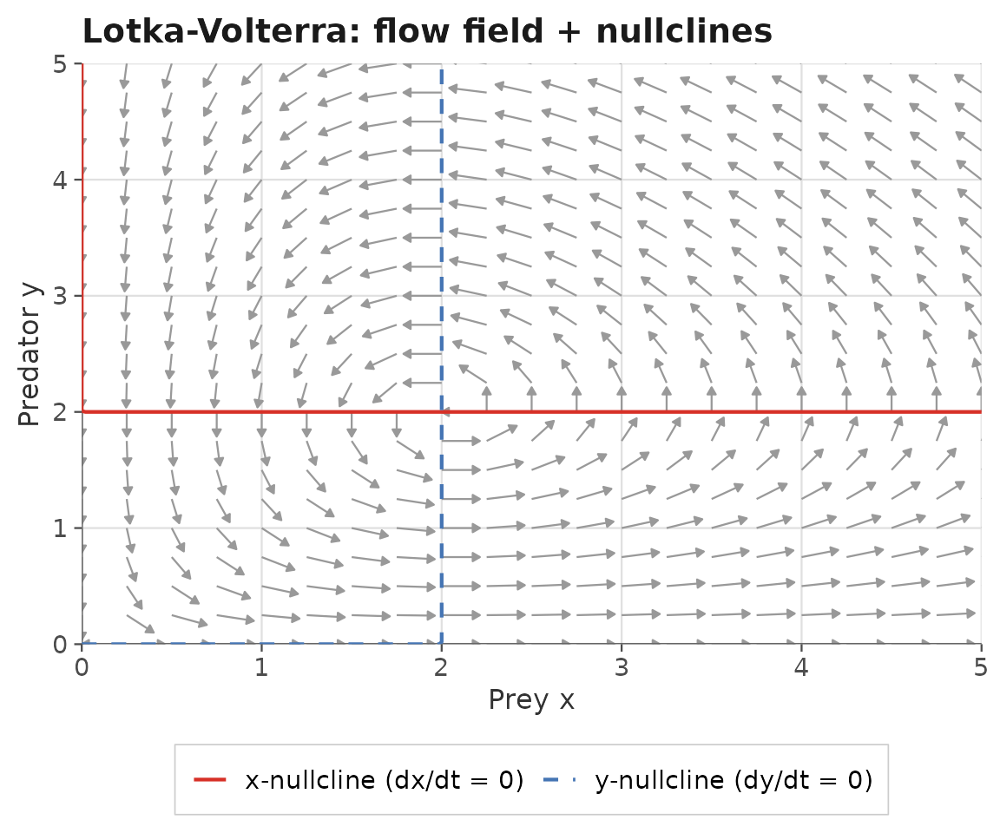
2.3 Adding trajectories
Trajectories show that solutions orbit the interior equilibrium indefinitely — a signature of a neutrally stable center.
ics <- matrix(
c(0.5, 0.5,
1.0, 3.0,
3.5, 0.5,
3.0, 3.5),
ncol = 2, byrow = TRUE
)
gg_flow_field(
ode_lotka_volterra,
xlim = c(0, 5),
ylim = c(0, 5),
parameters = lv_params,
xlab = "Prey x",
ylab = "Predator y",
title = "Lotka-Volterra: complete phase portrait"
) +
gg_nullclines(
ode_lotka_volterra,
xlim = c(0, 5),
ylim = c(0, 5),
parameters = lv_params,
legend_position = "bottom"
) +
gg_trajectory(
ode_lotka_volterra,
y0 = ics,
xlim = c(0, 5),
ylim = c(0, 5),
parameters = lv_params,
t_end = 25,
color = "grey30",
add_start_point = FALSE
)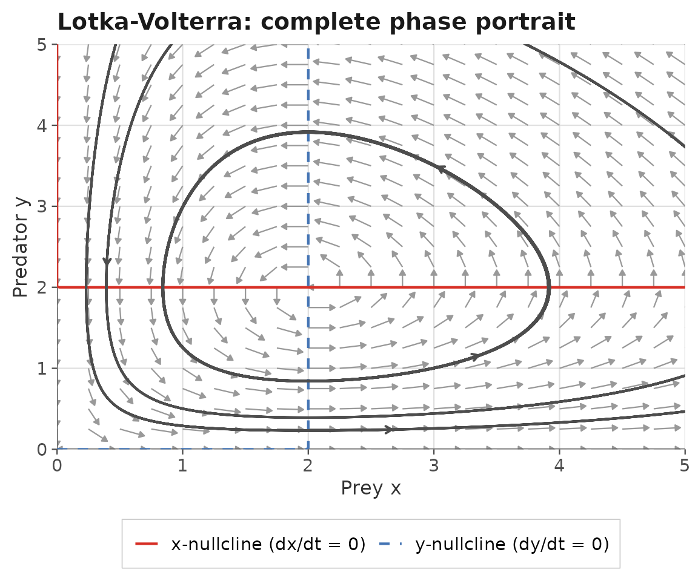
2.4 Time series
The corresponding time series shows the classic out-of-phase oscillation between prey and predator:
gg_time_series(
ode_lotka_volterra,
y0 = c(1, 1),
t_end = 25,
parameters = lv_params,
var_labels = c("Prey x(t)", "Predator y(t)"),
title = "Lotka-Volterra: time series"
)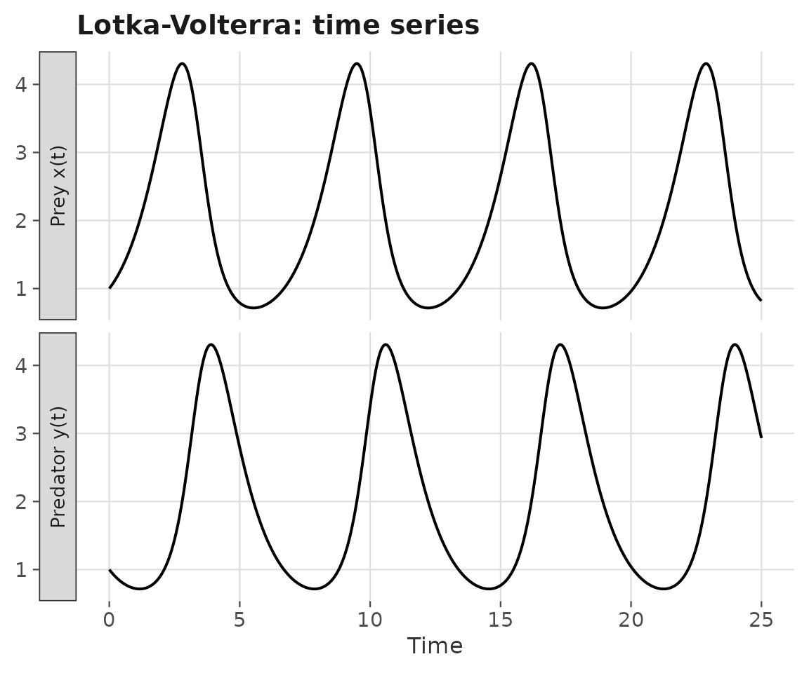
Technical aside: The Lotka–Volterra interior equilibrium is a center — a special case where the linearization has purely imaginary eigenvalues () and the Jacobian test is inconclusive about nonlinear stability. The orbits are in fact closed curves (a consequence of a conserved quantity), but this is not guaranteed by linearization alone. Compare with the Van der Pol oscillator in Section 5, which has a stable limit cycle that attracts all nearby trajectories.
3 User-defined example: SIR epidemic model
The SIR (Susceptible–Infected–Recovered) model describes epidemic dynamics in a closed population:
where (proportions), is the transmission rate, and is the recovery rate. The basic reproduction number determines whether an epidemic occurs: an epidemic grows when .
We define this as a Convention B ODE to illustrate the simplified interface:
sir_ode <- function(x, y, parameters = NULL) {
# x = S (susceptible proportion)
# y = I (infected proportion)
beta <- parameters[["beta"]]
gamma <- parameters[["gamma"]]
c(
-beta * x * y,
beta * x * y - gamma * y
)
}
sir_params <- c(beta = 0.5, gamma = 0.1) # R0 = 5
gg_flow_field(
sir_ode,
xlim = c(0, 1),
ylim = c(0, 0.3),
parameters = sir_params,
xlab = "Susceptible S",
ylab = "Infected I",
title = "SIR model (R0 = 5): phase plane"
) +
gg_nullclines(
sir_ode,
xlim = c(0, 1),
ylim = c(0, 0.3),
parameters = sir_params,
legend_position = "bottom"
) +
gg_trajectory(
sir_ode,
y0 = list(c(0.99, 0.01), c(0.70, 0.01), c(0.30, 0.01)),
xlim = c(0, 1),
ylim = c(0, 0.3),
parameters = sir_params,
t_end = 80,
color = "grey30",
add_start_point = FALSE
) +
# Mark the epidemic threshold S = 1/R0 = gamma/beta
geom_vline(xintercept = sir_params["gamma"] / sir_params["beta"],
linetype = "dotted", color = "firebrick") +
annotate("text", x = 0.22, y = 0.28,
label = "S = 1/R0", color = "firebrick", size = 3.5,
hjust = 0)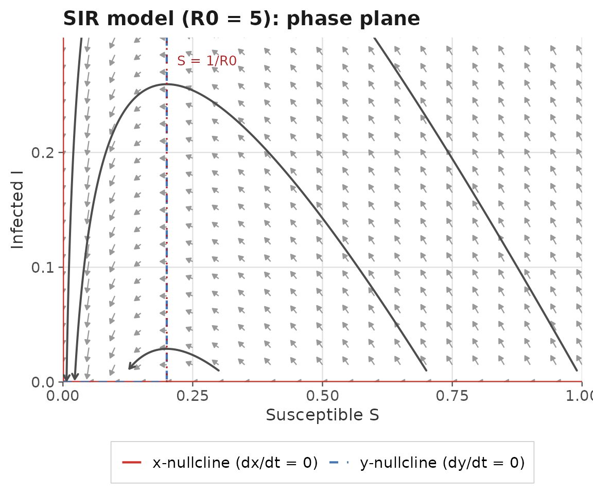
The vertical dotted line marks . Trajectories that cross the x-nullcline (y-nullcline here is or ) are at the epidemic peak; afterward declines. All trajectories end on the x-axis () — the disease-free states — confirming that the epidemic always burns out in a closed population.
The built-in ode_sir() provides the same model with an
additional scale parameter for switching between
proportions and absolute counts:
# Equivalent using the built-in system
gg_flow_field(
ode_sir,
xlim = c(0, 1),
ylim = c(0, 0.3),
parameters = sir_params,
xlab = "Susceptible S",
ylab = "Infected I",
title = "SIR model: built-in ode_sir()"
) +
gg_nullclines(ode_sir,
xlim = c(0, 1),
ylim = c(0, 0.3),
parameters = sir_params,
legend_position = "bottom")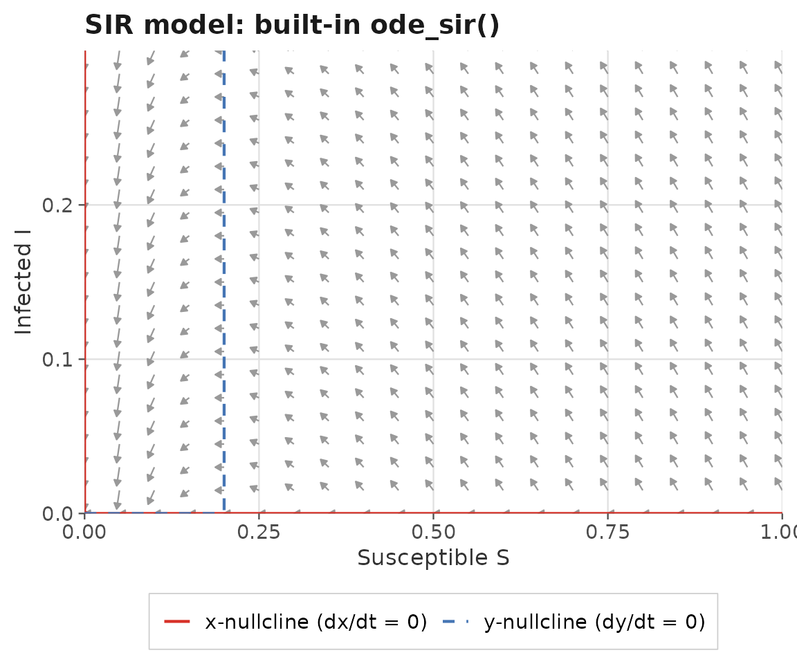
4 The Van der Pol oscillator and limit cycles
The Van der Pol oscillator is a paradigmatic nonlinear oscillator with a stable limit cycle — a closed trajectory that attracts all nearby solutions:
where controls the strength of the nonlinear damping. For the system reduces to the harmonic oscillator with circular orbits. For a unique stable limit cycle exists; the origin is an unstable spiral.
gg_flow_field(
ode_van_der_pol,
xlim = c(-3, 3),
ylim = c(-4, 4),
parameters = c(mu = 1),
title = "Van der Pol (mu = 1): phase plane"
) +
gg_nullclines(
ode_van_der_pol,
xlim = c(-3, 3),
ylim = c(-4, 4),
parameters = c(mu = 1),
legend_position = "bottom"
) +
gg_trajectory(
ode_van_der_pol,
y0 = list(c(0.1, 0.1), # from inside
c(2.5, 0.0), # from outside
c(-2.5, 0.0)),
xlim = c(-3, 3),
ylim = c(-4, 4),
parameters = c(mu = 1),
t_end = 20,
color = "grey30",
add_start_point = FALSE
)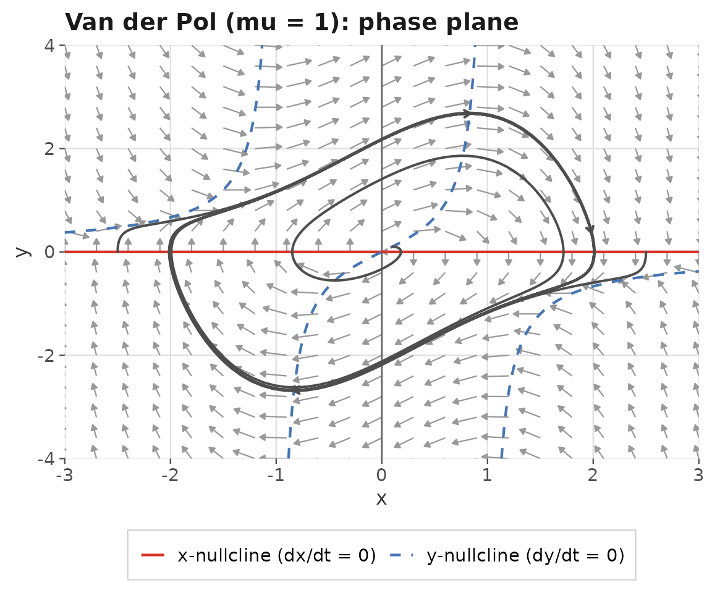
Both trajectories — one starting inside the limit cycle and one outside — converge to the same closed orbit. This is the defining property of a stable limit cycle.
4.1 Effect of mu on the waveform
As increases, the limit cycle shape becomes increasingly non-circular, eventually producing the sharp jumps characteristic of a relaxation oscillator:
make_vdp_ts <- function(mu) {
gg_time_series(
ode_van_der_pol,
y0 = c(0.1, 0.1),
t_end = 30,
parameters = c(mu = mu),
var_labels = c("x", "y"),
title = paste0("mu = ", mu)
)
}
if (requireNamespace("patchwork", quietly = TRUE)) {
library(patchwork)
make_vdp_ts(0.5) | make_vdp_ts(1) | make_vdp_ts(3)
} else {
make_vdp_ts(1)
}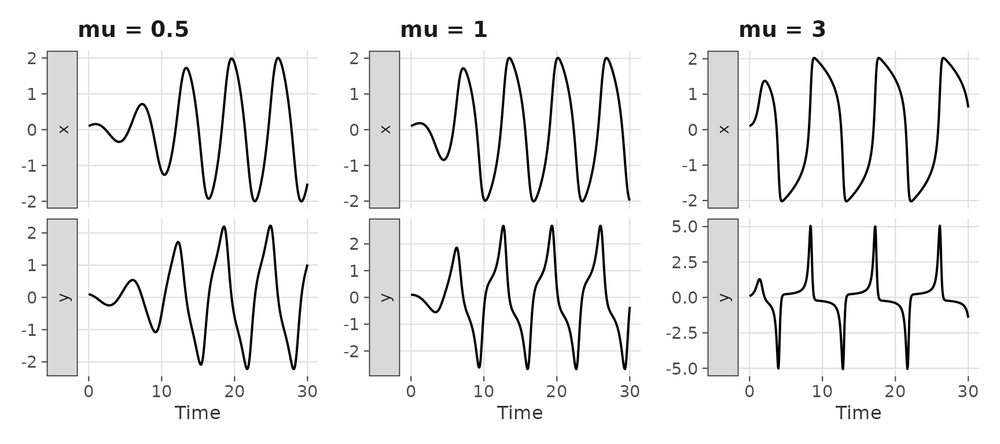
Technical aside: The existence and uniqueness of the Van der Pol limit cycle follows from the Poincaré–Bendixson theorem combined with the Bendixson–Dulac criterion. The key insight is that the origin is an unstable spiral (tr at the origin) and that trajectories are bounded, so by Poincaré–Bendixson there must be a periodic orbit. Uniqueness follows from the specific structure of the nonlinearity.
5 Two-species competition and bistability
The Lotka–Volterra competition model describes two species competing for the same resource:
where is the per-capita effect of species 2 on species 1, and vice versa. The four possible qualitative outcomes depend on the relative magnitudes of the competition coefficients and carrying capacities:
| Condition | Outcome |
|---|---|
| and | Species 1 wins |
| and | Species 2 wins |
| and | Stable coexistence |
| and | Bistability (priority effects) |
5.1 Stable coexistence
When interspecific competition is weaker than intraspecific competition, a stable coexistence equilibrium exists:
params_coexist <- c(r1=1, r2=1, K1=10, K2=10, a12=0.5, a21=0.5)
gg_flow_field(
ode_competition,
xlim = c(0, 12),
ylim = c(0, 12),
parameters = params_coexist,
xlab = "Species 1 (N1)",
ylab = "Species 2 (N2)",
title = "Competition: stable coexistence"
) +
gg_nullclines(
ode_competition,
xlim = c(0, 12),
ylim = c(0, 12),
parameters = params_coexist,
legend_position = "bottom"
) +
gg_trajectory(
ode_competition,
y0 = list(c(1,9), c(9,1), c(1,1), c(9,9)),
xlim = c(0, 12),
ylim = c(0, 12),
parameters = params_coexist,
t_end = 20,
color = "grey30",
add_start_point = FALSE
)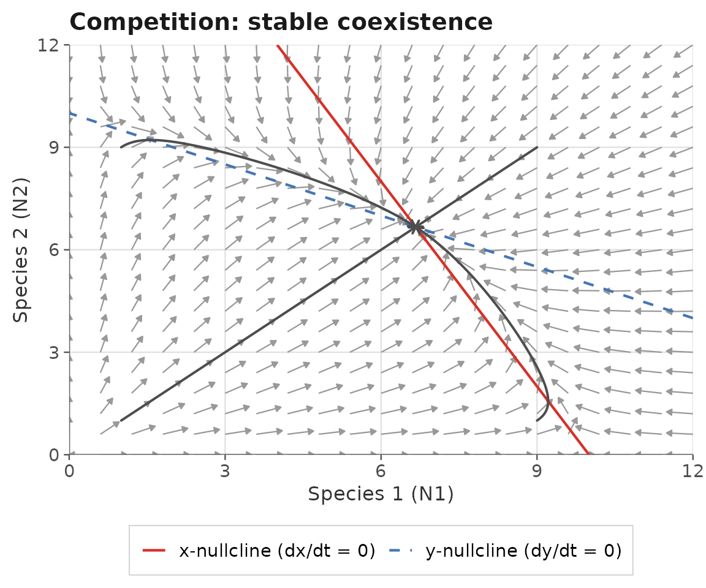
5.2 Bistability (priority effects)
When interspecific competition is stronger than intraspecific competition, the coexistence equilibrium becomes an unstable saddle and two stable single-species equilibria emerge. Which species wins depends entirely on initial conditions — this is called priority effects or founder control:
params_bistable <- c(r1=1, r2=1, K1=10, K2=10, a12=1.5, a21=1.5)
result_bistable <- gg_phase_plane(
ode_competition,
xlim = c(0, 12),
ylim = c(0, 12),
parameters = params_bistable,
t_end = 20,
n_ic = 5,
title = "Competition: bistability (priority effects)",
legend_position = "bottom"
)
result_bistable$plot +
labs(x = "Species 1 (N1)", y = "Species 2 (N2)")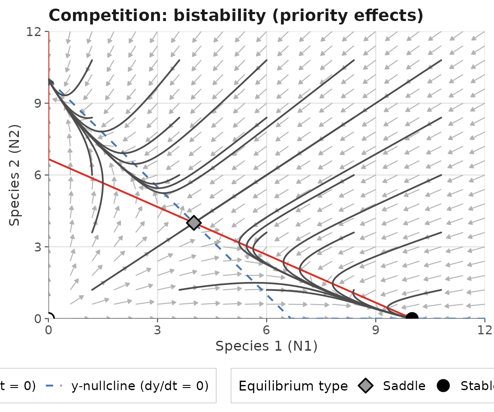
result_bistable$equilibria[, c("x", "y", "classification")]
#> x y classification
#> 1 -1.426918e-11 10 Stable node
#> 2 0.000000e+00 0 Unstable node
#> 3 4.000000e+00 4 Saddle
#> 4 1.000000e+01 0 Stable nodeThe saddle point at the interior equilibrium divides the phase plane into two basins of attraction. Its stable manifold is the separatrix — trajectories on one side converge to species 1 winning, those on the other side to species 2 winning.
5.3 Visualizing the separatrix with gg_manifolds()
# Extract the saddle from the equilibrium table
saddle_row <- result_bistable$equilibria[
result_bistable$equilibria$classification == "Saddle", ]
saddle_eq <- c(saddle_row$x[[1L]], saddle_row$y[[1L]])
result_bistable$plot +
gg_manifolds(
ode_competition,
equilibrium = saddle_eq,
parameters = params_bistable,
t_manifold = 8
) +
labs(x = "Species 1 (N1)",
y = "Species 2 (N2)",
title = "Competition: bistability with separatrix")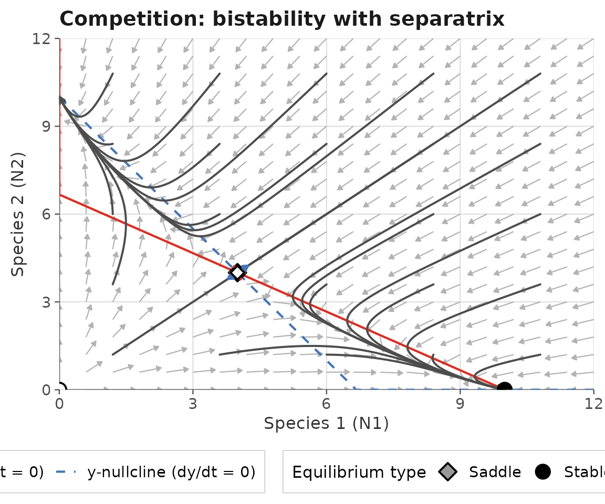
The blue dashed curves (stable manifold) form the separatrix. Trajectories starting above it converge to species 2 winning; those below converge to species 1 winning.
6 The simple pendulum
The simple pendulum illustrates how a 2D phase plane can represent a second-order ODE. Writing for the angle from vertical and for the angular velocity:
where is the ratio of gravitational acceleration to pendulum length and is a damping coefficient.
The equilibria are at for integer . Even multiples of are stable (pendulum hanging down); odd multiples are unstable saddles (pendulum balanced upright).
gg_flow_field(
ode_simple_pendulum,
xlim = c(-pi, pi),
ylim = c(-3, 3),
parameters = c(gL = 1, b = 0),
n_points = 25,
xlab = "Angle theta (radians)",
ylab = "Angular velocity omega",
title = "Simple pendulum: undamped (b = 0)"
) +
gg_nullclines(
ode_simple_pendulum,
xlim = c(-pi, pi),
ylim = c(-3, 3),
parameters = c(gL = 1, b = 0),
legend_position = "bottom"
) +
gg_trajectory(
ode_simple_pendulum,
y0 = list(c(0.5, 0), c(1.5, 0), c(2.5, 0)),
xlim = c(-pi, pi),
ylim = c(-3, 3),
parameters = c(gL = 1, b = 0),
t_end = 12,
color = "grey30",
add_start_point = FALSE
) +
scale_x_continuous(
breaks = c(-pi, -pi/2, 0, pi/2, pi),
labels = c("-pi", "-pi/2", "0", "pi/2", "pi")
)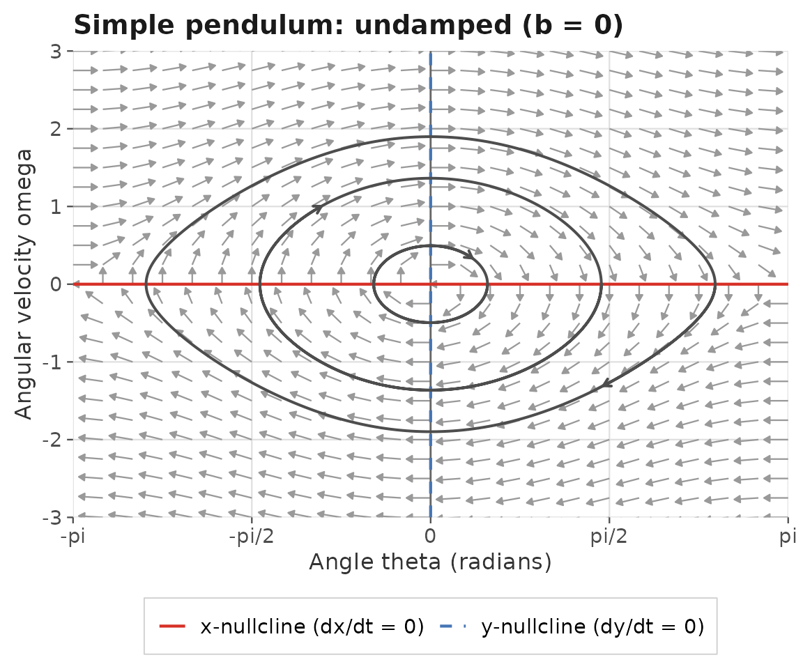
gg_flow_field(
ode_simple_pendulum,
xlim = c(-pi, pi),
ylim = c(-3, 3),
parameters = c(gL = 1, b = 0.5),
n_points = 25,
xlab = "Angle theta (radians)",
ylab = "Angular velocity omega",
title = "Simple pendulum: damped (b = 0.5)"
) +
gg_nullclines(
ode_simple_pendulum,
xlim = c(-pi, pi),
ylim = c(-3, 3),
parameters = c(gL = 1, b = 0.5),
legend_position = "bottom"
) +
gg_trajectory(
ode_simple_pendulum,
y0 = list(c(0.5, 0), c(1.5, 0), c(2.5, 0)),
xlim = c(-pi, pi),
ylim = c(-3, 3),
parameters = c(gL = 1, b = 0.5),
t_end = 15,
color = "grey30",
add_start_point = FALSE
) +
scale_x_continuous(
breaks = c(-pi, -pi/2, 0, pi/2, pi),
labels = c("-pi", "-pi/2", "0", "pi/2", "pi")
)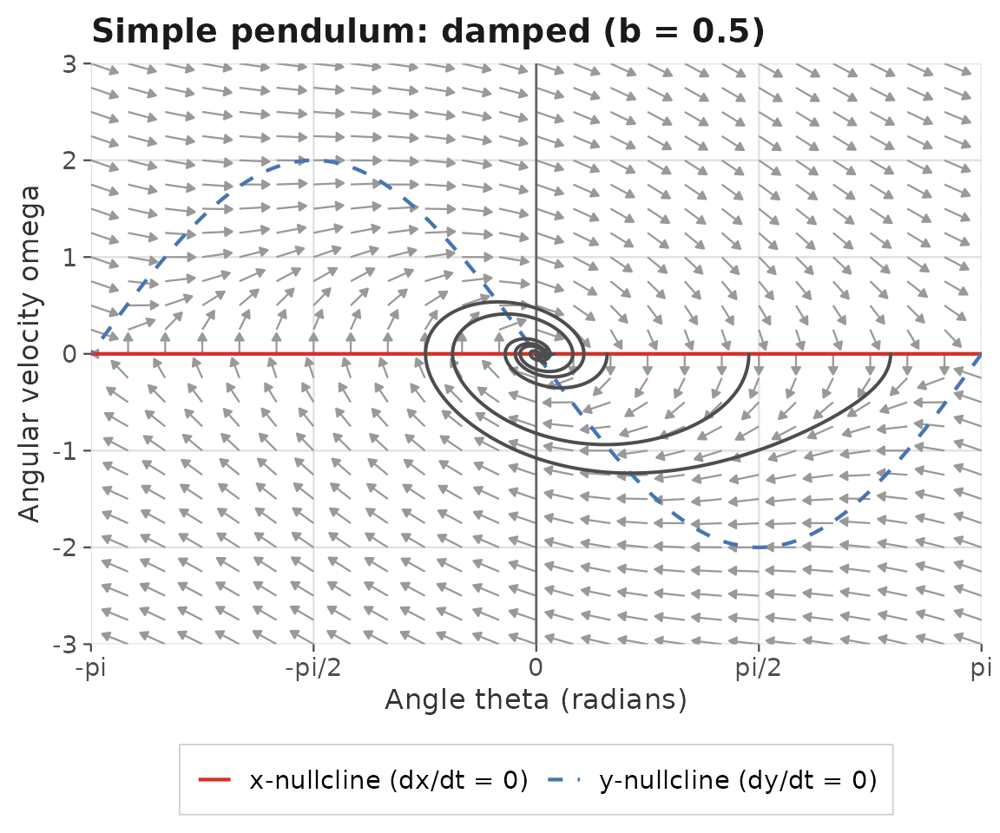
With damping, the stable equilibria at become stable spirals (for small ) or stable nodes (for large ), and the heteroclinic orbits connecting the saddles at break up into spiraling trajectories.
7 Customizing phase plane plots
Because all gg_* functions return standard ggplot2
objects or layer lists, full ggplot2 customization is available. Here we
demonstrate several common customizations on the Lotka–Volterra
system:
# When color_by_magnitude = TRUE, gg_flow_field() uses a continuous color
# scale for arrow magnitude. To avoid a scale conflict, gg_nullclines()
# must use add_legend = FALSE so it draws fixed-color lines without
# adding a competing discrete color scale.
gg_flow_field(
ode_lotka_volterra,
xlim = c(0, 5),
ylim = c(0, 5),
parameters = lv_params,
arrow_type = "proportional",
color_by_magnitude = TRUE,
magnitude_palette = c("grey90", "#2c7bb6"),
n_points = 25
) +
gg_nullclines(
ode_lotka_volterra,
xlim = c(0, 5),
ylim = c(0, 5),
parameters = lv_params,
x_color = "#d73027",
y_color = "#1a9641",
linewidth = 1.2,
add_legend = FALSE # avoids discrete/continuous scale conflict
) +
gg_trajectory(
ode_lotka_volterra,
y0 = list(c(1, 0.5), c(3.5, 0.5), c(0.5, 3)),
xlim = c(0, 5),
ylim = c(0, 5),
parameters = lv_params,
t_end = 25,
color = "black",
linewidth = 0.9,
add_start_point = FALSE
) +
geom_point(
data = data.frame(x = 2, y = 2),
mapping = aes(x = x, y = y),
shape = 21, fill = "white", color = "black", size = 4, stroke = 1.2
) +
labs(
x = "Prey x(t)",
y = "Predator y(t)",
title = "Lotka-Volterra: customized phase portrait",
color = "Speed"
)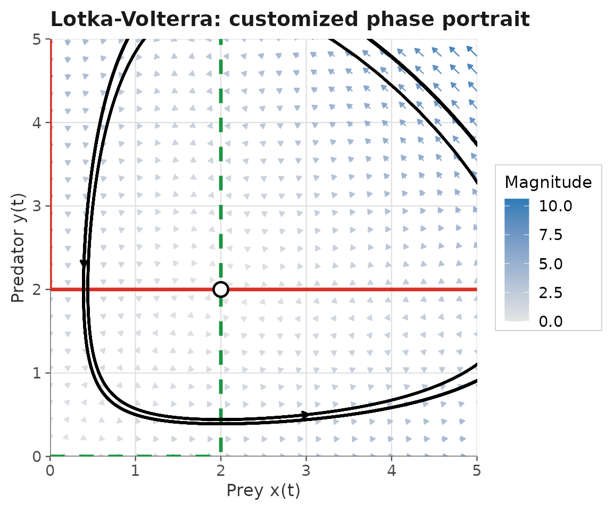
Summary
This vignette covered the complete ggphasr workflow for
2D autonomous ODE systems across four classical models:
| System | Key feature illustrated |
|---|---|
| Lotka–Volterra | Neutrally stable center, closed orbits |
| SIR epidemic | Disease-free saddle, epidemic threshold |
| Van der Pol | Stable limit cycle, relaxation oscillations |
| Competition | Bistability, separatrix, manifolds |
| Pendulum | Second-order ODE as 2D system, damping |
The composable layer approach —
gg_flow_field() + gg_nullclines() + gg_trajectory() — makes
it straightforward to build up a phase portrait incrementally, while
gg_phase_plane() provides a quick all-in-one view for
initial exploration.
The next vignette, Equilibrium Analysis, goes deeper into the analytical tools: finding all equilibria numerically, classifying them via the trace-determinant plane, and drawing stable and unstable manifolds of saddle points.